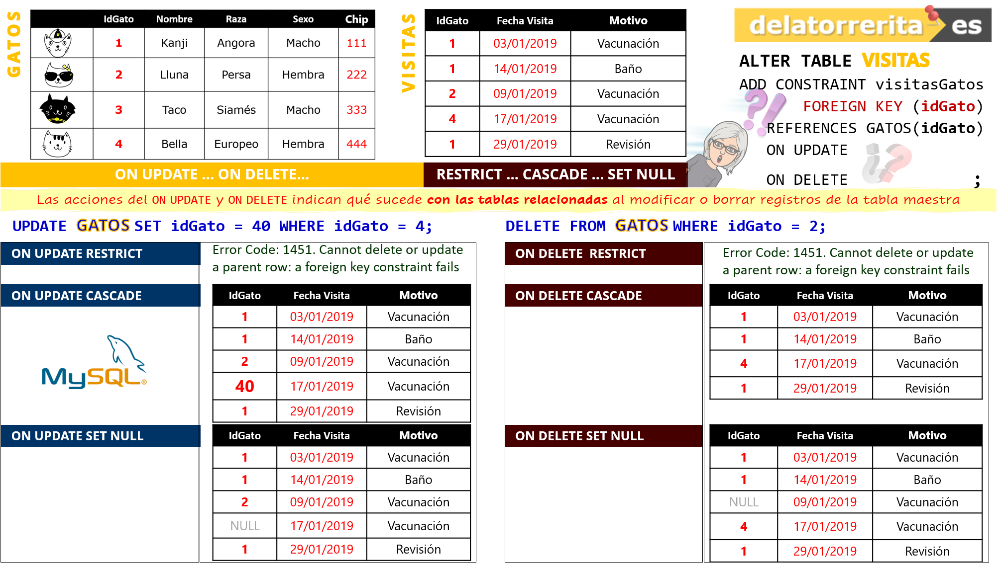
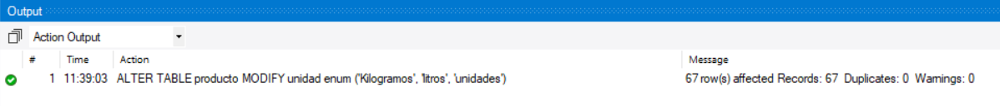

Paso 5. Creación de las tablas de la Base de Datos y relaciones
| Sentencia | Justificación |
|---|---|
CREATE TABLE alergeno (
|
El campo es PRIMARY KEY para que el contenido del campo pueda relacionarse con la tabla alergenos_producto. Al ser clave primaria, no hace falta la cláusula UNIQUE. |
...etc...
Recordar que cada relación funciona de manera independiente dependiendo de cómo se hayan definido las cláusulas ON DELETE y ON UPDATE.
| Sentencia | Justificación |
|---|---|
ALTER TABLE alergeno_producto
|
Creamos la relación entre las tablas producto y alergeno producto, estableciendo ON DELETE en restrict de manera que no se pueda eliminar un alergeno si el mismo existe en la tabla producto y ON UPDATE en cascade para que el nombre del alergeno cambie en todos los productos que lo contengan en caso de ser actualizado. |

Paso 6. Las entregas serán realizadas de esta forma prácticamente en todos los productos:
Realizar las siguientes modificaciones a la estructura de la base de datos, anotar la sentencia SQL y su salida en un documento:
3.1. Cambia el tipo de datos del campo unidad de la tabla Producto a enum. Los valores que podrá recibir el campos son: Kilogramos, litros, unidades.
Dado que se requiere de una modificación en la tabla, la instrucción que deberá utilizarse será ALTER TABLE.
Para cambiar un tipo de campos en una tabla, se usa la cláusula MODIFY.
USE ICX0_P3_00; -- número de vuestra BBDD
ALTER TABLE producto MODIFY unidad enum ('Kilogramos', 'litros', 'unidades');
